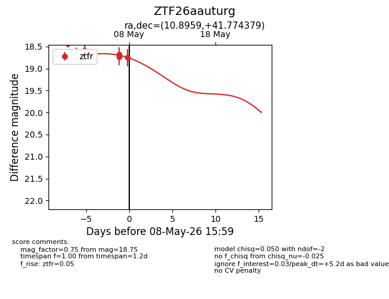
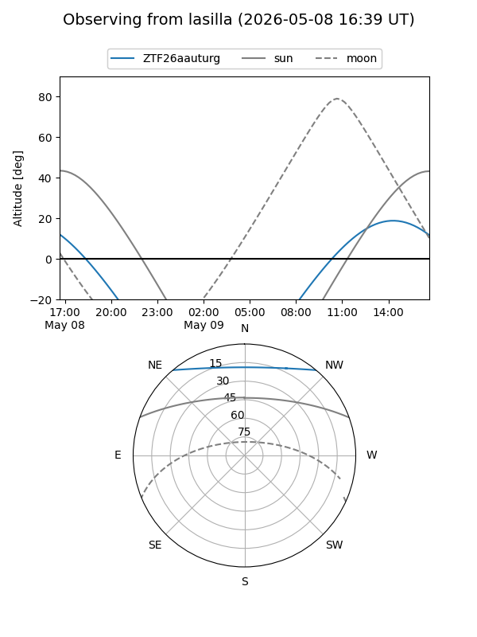
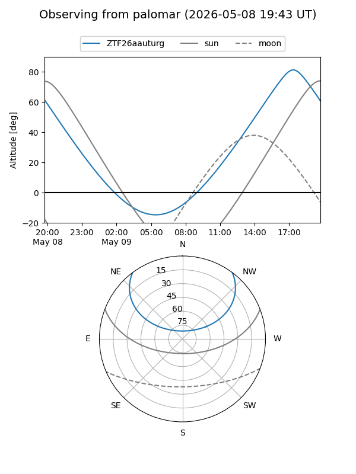
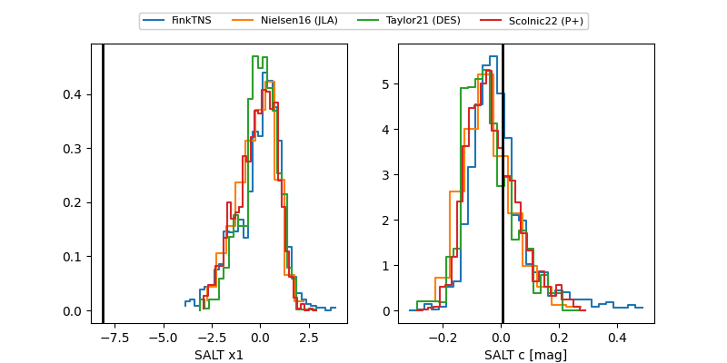

ZTF26aauturg
Target ZTF26aauturg at 2026-05-08 16:01
Aliases and brokers:
FINK: link
Lasair: link
ALeRCE: link
alt names
ZTF26aauturg (ztf,fink_ztf)
Coordinates:
equatorial (ra, dec) = 10.8959,+41.77438
equatorial (HMS+DMS) = 00:43:35.01,+41:46:27.76
galactic (l, b) = (121.3627,-21.07344)
Flags:
Photometry:
last ztfr=18.75
3 ztfr detections
Lightcurve

Visibility


Additional plots
